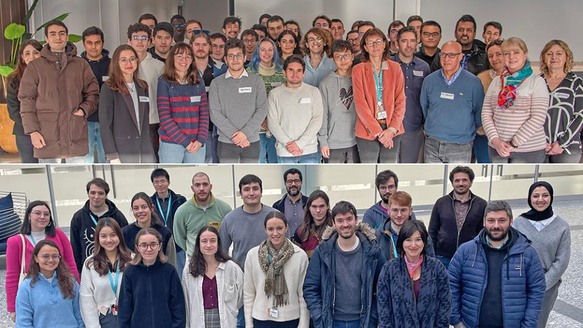
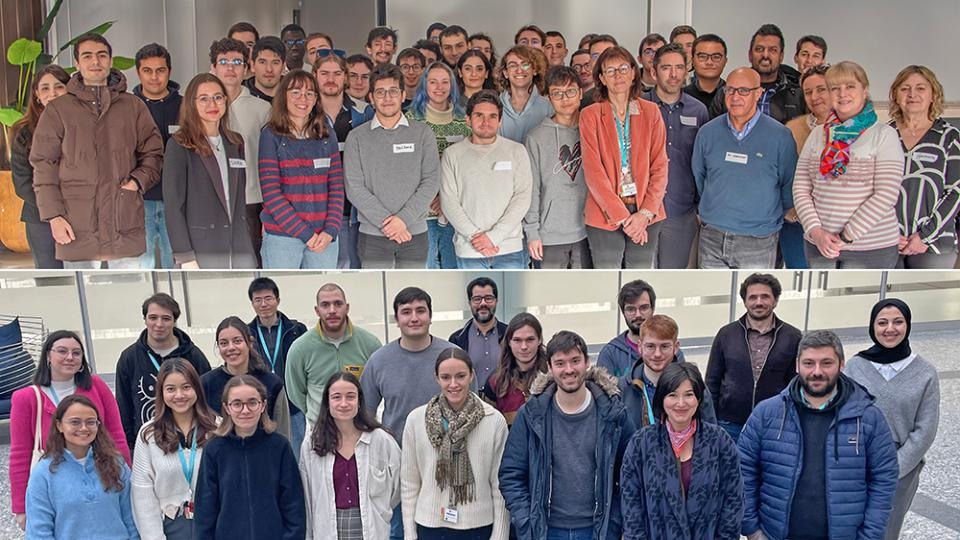

Collaborators

PhD Student & Researcher
Hello! I am Mouhamadou F. Ball, a dedicated researcher and PhD student specializing in model-based risk analysis of complex systems. My doctoral research focuses on leveraging digital twin technology to enhance the resilience of swarm-configured systems. I am deeply committed to advancing knowledge in my field and contributing to impactful scientific discoveries that address real-world challenges.

 
